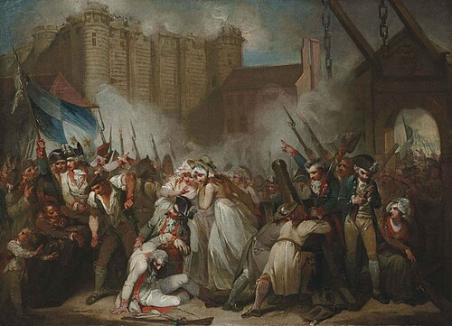

The Storming of the Bastille
Henry Singleton
About the Artist
Henry Singleton (1766–1839) was an English painter known for depicting historical events and theatrical scenes.
Historical Context
Captures July 14, 1789, when Parisian revolutionaries stormed the Bastille fortress[cite: 1].
Interpretation
Symbolizes the collapse of royal tyranny in favor of popular sovereignty[cite: 1].